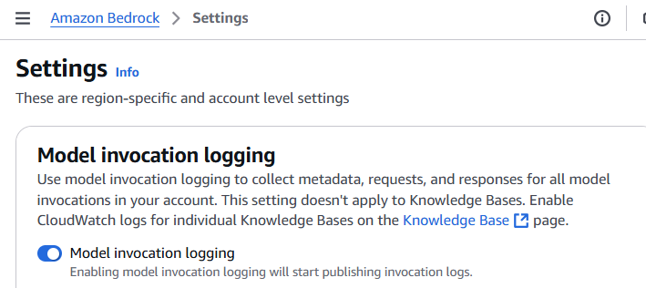

Medical Calls Analysis in AWS (Part 4) - Monitoring with AWS CloudWatch
Published: May 8, 2024 Updated: May 17, 2025
Github Repo: https://github.com/pedropcamellon/medical-calls-analysis-aws
Introduction
In the previous article of this series, we created a simple yet extensible event-driven architecture using S3 triggers, AWS Lambda, Amazon Transcribe, and Amazon Bedrock. As applications scale up, manually tracking metrics and monitoring system performance becomes increasingly challenging and time-consuming. With numerous API calls, data processing tasks, and model invocations happening simultaneously, it’s crucial to implement automated monitoring solutions. This is where a robust logging and monitoring framework becomes essential.
AWS services offer comprehensive monitoring through seamless integration with CloudWatch. Amazon Bedrock’s monitoring features work alongside Lambda function logs and S3 trigger tracking to provide a complete monitoring solution. Through CloudWatch’s centralized platform, you can track usage metrics, create custom dashboards, set up real-time alerts, and monitor AI model interactions. This integration enables detailed logging, helps maintain data privacy and compliance, and provides valuable audit trails for debugging in serverless environments. By leveraging these capabilities, you can maintain a unified view of your system’s performance and ensure your AI-powered application operates reliably at scale.
Additionally, CloudWatch enables you to create alarms based on specific metric value thresholds or anomalous metric behavior detected through machine learning algorithms. These alarms can be configured to notify you if triggered, enabling swift action to mitigate any potential issues or disruptions. Automated actions can also be set up, such as temporarily blocking model access when usage thresholds are exceeded, helping prevent potential abuse while maintaining application security and cost controls.
In this article, we’ll set up monitoring for our Lambda function that summarizes medical call transcripts. We’ll configure the necessary permissions to enable model invocation logging in CloudWatch and create an alarm to track the number of model invocations, helping us maintain visibility into our application’s usage patterns.
Configuring model invocation logging
To configure logging, navigate to the Settings page in the Bedrock console, from the left navigation bar. Then toggle the Model invocation logging button which will present you with several fields that will need to be filled out before logging can be enabled. First, select the data types to include with logs. You can choose text, image and embedding.


Now you’ll need to choose where to send your logs. You have three options:
- S3 Only: Logs are only sent to an S3 storage bucket that you choose.
- CloudWatch Logs only: Logs are sent to CloudWatch. If any log data is very large (over 100kb) or contains files like images, you can choose to have it sent to S3 instead.
- Both S3 & CloudWatch Logs: Logs are sent to both services. Like option 2, very large files or binary data will only go to S3.
No matter which option you pick, you stay in control of your data. You can encrypt it using KMS and decide how long to keep the logs. I decided to use CloudWatch Logs only for my setup. If you don’t have a log group already, you’ll need to create one in CloudWatch and specify its name here.


Next, select the Create and use a new role option and provide a name for your role. I chose BedrockCloudWatchLogs. Then, in the S3 bucket for large data delivery field, select the same bucket we created earlier for storing medical call audio files. Click Save Settings to complete the configuration.


Inspecting Log Data
Now that we have setup logging in Bedrock, triggering the summarize Lambda function will create log streams where you can observe both the model invocation details and Lambda function output. This combination of logs provides valuable debugging information about how your application is processing requests and interacting with the model.

In near real-time you should start to see logs in the newly created Log Group when you query the log group from Logs Insights. As shown in the image above, each log entry contains detailed information about the model invocation.

Machine Learning Data Protection for CloudWatch Logs
CloudWatch provides built-in data protection capabilities that use pattern matching and machine learning to identify and mask sensitive information in your logs. For our medical call analysis system, we’ll enable a data protection policy on our Log Group to automatically detect and hide sensitive personal and financial data including patient names, addresses, email addresses, credit card numbers, and security codes. This ensures our log data remains secure while still maintaining its usefulness for monitoring and analysis.
We’ll also send the audit findings to a dedicated audit log group, which allows us to track and analyze the data protection results separately from our source logs. This separation is required by CloudWatch and helps maintain clear boundaries between source data and audit findings.

CloudWatch Alarms
Amazon Bedrock provides real-time metrics through CloudWatch that help track crucial performance indicators. These metrics include invocation counts, latency measurements, error rates, and token usage. For example, you can monitor the number of API requests through the Invocations metric, track processing speed with InvocationLatency, or measure model usage by analyzing InputTokenCount and OutputTokenCount.
CloudWatch’s alarm capabilities allow you to set up automated monitoring based on these metrics. You can configure alerts for when certain thresholds are exceeded, such as high latency or error rates, and set up anomaly detection to automatically identify unusual patterns in your model’s behavior. These alarms can trigger notifications or automated actions to help maintain optimal system performance.
Setting up SNS Topic for Alarm Notifications
Before configuring the alarm, we need to set up an Amazon Simple Notification Service (SNS) topic that will handle alarm notifications. SNS will allow us to send notifications through various channels like email, SMS, or even trigger Lambda functions when alarms are activated.
Navigate to the Amazon SNS console and follow these steps:
- Create a new SNS topic:
- Click on “Topics” in the left navigation pane
- Select “Create topic”
- Choose “Standard” as the type
- Name your topic (e.g., “bedrock-monitoring-alerts”)
- Add any relevant tags
- Click “Create topic”
- Create a subscription for your topic:
- Select your newly created topic
- Click “Create subscription”
- Choose the protocol (Email, SMS, Lambda, etc.)
- Enter the endpoint where notifications should be sent
- Click “Create subscription”
Once you’ve set up your SNS topic and subscription, make note of the topic ARN - you’ll need this when creating the CloudWatch alarm in the next section.
Setting up SNS Topic for Alarm Notifications
To receive notifications when the alarm triggers, you’ll need to set up an Amazon SNS topic:
- Open the Amazon SNS console
- Click “Create topic”
- Choose “Standard” type
- Give your topic a name
- Click “Create topic”

Alarm Setup
To set up an alarm for Bedrock invocations, navigate to “Alarms” > “All Alarms” in the CloudWatch console and click “Create alarm”. When selecting the metric, choose “AWS/Bedrock” namespace, then “Model Metrics”, and finally select the “Invocations” metric to monitor.


In the CloudWatch alarm configuration, set the metric statistic to “Sum” with a 1-minute period. For conditions, configure a static threshold that triggers when the value is greater than 10.


- Create a subscription for the topic:
- Select “Create subscription”
- Choose the protocol (Email, SMS, etc.)
- Enter the endpoint (email address, phone number)
- Click “Create subscription”
- Back in the CloudWatch alarm creation:
- In the “Notification” section, select your newly created SNS topic
- Choose the alarm states that should trigger notifications (ALARM, OK, INSUFFICIENT_DATA)
- Add a name and description for your alarm, then click “Create alarm”
Once created, the alarm will monitor Bedrock invocations and send notifications through SNS when the threshold is exceeded.

Conclusions
In this post, we demonstrated how CloudWatch seamlessly integrates with AWS services like Lambda and Bedrock to provide comprehensive monitoring capabilities. By configuring model invocation logging, data protection policies, and custom alarms, you can maintain visibility into your application’s behavior while preventing unwanted usage and controlling costs. CloudWatch’s centralized platform not only simplifies the monitoring of generative AI applications but also ensures they operate reliably and securely at scale through its integration with Bedrock and other AWS services.
Sources
-
[Monitoring Generative AI applications using Amazon Bedrock and Amazon CloudWatch integration AWS Cloud Operations Blog](https://aws.amazon.com/blogs/mt/monitoring-generative-ai-applications-using-amazon-bedrock-and-amazon-cloudwatch-integration/) - Monitor model invocation using CloudWatch Logs and Amazon S3 - Amazon Bedrock